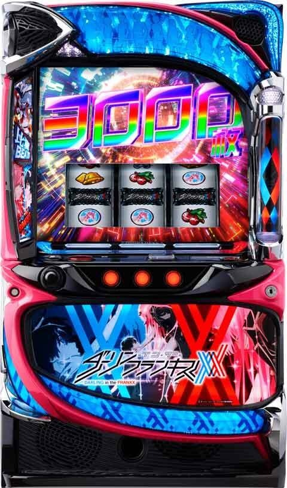
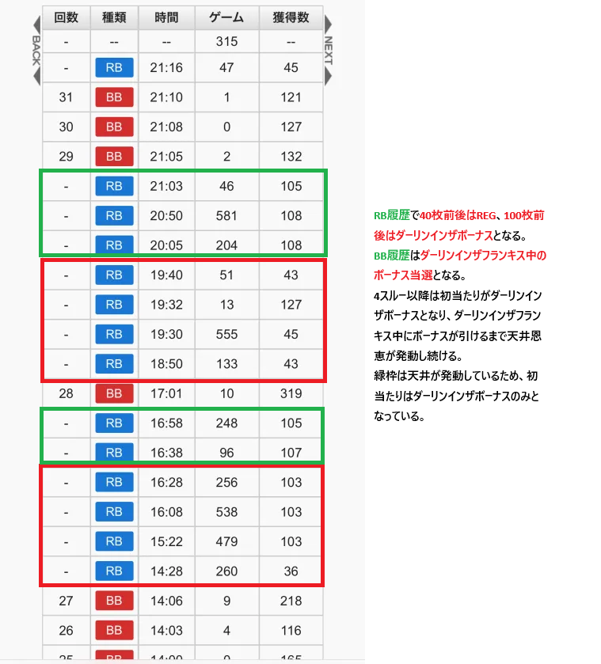
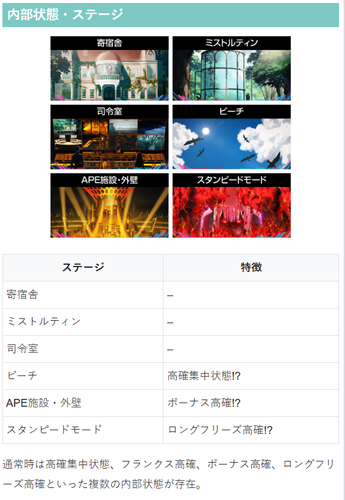
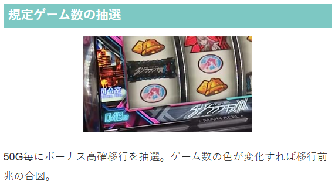

ダーリン・イン・ザ・フランキス

【天井情報】
通常時を最大666G＋α消化でボーナスに当選。
RB or ボーナス高確率を4連続スルー後、5回目のボーナスがダーリン・イン・ザ・ボーナス以上となる。
朝イチリセット時は天井が390G＋αに短縮。
【リセット判別】
不明
【有利区間について】
エンディング等で有利区間がリセットされるとボーナス高確率MAXX(30)Gからスタート!?
狙い目
【リセット狙い】
100Gから
【ゲーム数天井狙い】
410Gから
3スルー 270Gから（4スルー以降強いため）
【スルー天井狙い】
4スルー以降 0Gから
※4スルー以降は初当たりがダーリンインザボーナスとなるため現状0Gから打てそう。
【ゾーン狙い】
不明
【有利区間関連狙い】
不明
【示唆等の押し引き】
ステージが「APE施設・外壁」、「スタンピードモード」の場合は、ステージ抜けるまで打った方が良さそう。
やめ時
ボーナスまたはダーリンインザフランキス後、ビーチステージはデフォルトなのでやめ。ビーチステージ以外だと高確集中状態の可能性があるため10数G回してやめる感じ？
その他
スルー天井の履歴



参考元
基本情報
- メーカー: スパイキー
- 機械割: 97.8% 〜 114.5%
- 導入開始日: 2025年08月04日（月）
- ゲーム性概要: ●通常時はレア役・フランクス絵柄停止からCZを目指すゲーム性 ●CZは2種類あり、いずれも小役のヒキが重要 ●ボーナスは3種類で、エピソードボーナスとダーリン・イン・ザ・ボーナスはボーナス高確突入濃厚 ●REGはダーリン・イン・ザ・ボーナスへの昇格を抽選する ●ボーナス高確は10G＋α以内にボーナス当選を目指すボーナス連タイプ（ボーナス確率は約1/10.4）


打ち方
打ち方・小役
打ち方（小役狙い）
「最初に狙う箇所」 左リール上段付近にBARを狙う（赤7狙いもOK）。 左リールの停止形不問で、中リールはフリー打ちでOK。右リールにストレリチア（3連図柄）を狙えばフランクス目やストレリチア目を判別できるので、強めの演出発生時やチェリー停止時は狙ってみるのもあり。

「フランクス目・ストレリチア目の可能性がある停止形」 フランクス目やストレリチア目が成立しているかどうかは、左・中リールの停止形で見極めることが可能。 枚数的な損をするわけではないので状況に応じて打ち分けることをオススメだ。

「共通1枚ベル・レア役の停止形」 通常時のフランクス目はCZ当選濃厚、ストレリチア目は上位CZ or ボーナス直撃濃厚（どちらも前兆なしで即告知）なので、右リールを狙わなくても、ある程度の判別はできる。チェリーに関しては右リール下段にリプレイが止まらなければフランクス目以上になる。

［狙え発生時］ フランクス高確中は逆押し狙え経由でもフランクス目やストレリチア目が停止する。


解析情報通常時
小役関連
小役確率
| 役 | 確率 |
|---|---|
| 共通ベル | 1/14.2 |
| リプレイ | 1/7.8 |
| チェリー | 1/51.2 |
| チャンス目 | 1/327.7 |
| フランクス目（通常時） | 1/178.1 |
| フランクス目（フランクス高確中） | 1/12.2 |
| ストレリチア目 | 1/2340.6 |
通常時のフランクス目とストレリチア目の合算確率は1/165.5。
フランクス目・ストレリチア目
「フランクス目」 右リール枠内に2連図柄が止まるとフランクス目。成立後は前兆ナシで即、CZへ突入する。フランクス高確中は逆押し狙えからのフランクス目もアリ。 フランクス目停止時はリール枠内に出現するキャラに応じて、当選するCZの種類やボーナス期待度などを示唆する。

「ストレリチア目」 右リール枠内に3連図柄が止まるとストレリチア目。確定役的な扱いで、上位CZ or ボーナス直撃濃厚だ。

フランクス目・ストレリチア目停止時の移行先振り分け 通常中
| 役 | コネクトチャンス | ココロチャンス | ボーナス |
|---|---|---|---|
| フランクス目 | 99.2% | 0.4% | 0.4% |
| ストレリチア目 | ー | 12.5% | 87.5% |
| 最強フランクス目 | ー | 12.5% | 87.5% |
ボーナス高確中
| 役 | コネクトチャンス | ココロチャンス | ボーナス |
|---|---|---|---|
| フランクス目 | ー | 1.6% | 98.4% |
| ストレリチア目 | ー | 50.0% | 50.0% |
| 最強フランクス目 | ー | 50.0% | 50.0% |
内部状態関連
内部状態の種類と特徴
| 種類 | 特徴 |
|---|---|
| 通常 | おもに滞在する状態 |
| 高確集中状態 | レア役以外でもフランクス高確を抽選 |
| フランクス高確 | 10G間、約1/12でフランクス目が出現 |
| ボーナス高確 | フランクス目停止で上位CZorボーナス濃厚 |
| フリーズ高確 （スタンピードモード） | 10G間、全役でロングフリーズを抽選、 フリーズ期待度は約72%、 フランクス目確率約1/12 |
通常・高確集中・ボーナス高確・フリーズ高確の4種類の内部状態があり、それぞれ移行契機や恩恵が異なる。
各状態への移行契機
| 種類 | 契機 |
|---|---|
| 高確集中状態 | レア役や共通ベルでの抽選、 CZ・フランクス高確・ ボーナス・AT終了後の抽選 |
| フランクス高確 | おもにレア役での抽選、 高確集中状態中はレア役以外でも抽選あり |
| ボーナス高確 | 50G消化ごとに移行を抽選 |
| フリーズ高確 （スタンピードモード） | レア役での抽選 |
「高確集中状態示唆：ビーチ」

「フランクス高確」 おもにレア役を契機に移行する、フランクス目の高確率状態。滞在中は約1/12でフランクス目が停止する（逆押し狙えが発生）。

「ボーナス高確示唆：APE施設・外壁」

「フリーズ高確（スタンピードモード）」

［フランクス高確終了時・フランクス目成立時］ 高確集中状態移行率
| 状態 | 移行率 |
|---|---|
| 通常→ショート | 10.2% |
| ショート→ミドル | 5.1% |
| ミドル→ロング | 1.6% |
※フランクス目はCZ終了後に高確集中状態へ
［フランクス高確中の小役］高確集中状態移行率
| 状態 | 共通ベル | チャンス目 | チェリー | 移行確率 |
|---|---|---|---|---|
| 通常→ショート | 2.0% | 25.0% | 6.3% | 1/297.9 |
| ショート→ミドル | 0.4% | 20.3% | 4.7% | 1/552.5 |
| ミドル→ロング | 0.4% | 12.5% | 3.1% | 1/789.6 |
高確集中状態にはショート・ミドル・ロングの3種類が存在。フランクス高確中は共通ベルやレア役の一部で集中状態の昇格も抽選する。
フランクス高確当選率
| 役 | 当選率 |
|---|---|
| ハズレ・リプレイ | 0.01% |
| チャンス目 | 40.6% |
| チェリー | 16.4% |
| トータル移行確率 | 1/219.6 |
フランクス高確移行のメインはチャンス目・チェリーだが、ハズレやリプレイでも移行する可能性がある。
フランクス高確中のフランクス目・ストレリチア目確率
| 役 | 確率 |
|---|---|
| フランクス目 | 1/178.1 |
| ストレリチア目 | 1/2340.6 |
| 逆押しフランクス目 | 1/13.2 |
| 逆押し最強フランクス目 | 1/8192.0 |
| 逆押しストレリチア目 | 1/8192.0 |
| 合算 | 1/12.2 |
※逆押し狙え発生時の期待度は46.1%（コネクトチャンス中除く）
通常時（非高確集中状態）・フランクス高確当選率
※高確集中状態を経由しないフランクス高確当選率
高確集中状態中・フランクス高確当選率
| 役 | ショート | ミドルorロング |
|---|---|---|
| チャンス目 | 50.0% | 50.0% |
| チェリー | 20.3% | 20.3% |
| トータル移行確率 | 1/56.5 | 1/28.3 |
高確集中状態中は通常時と同じくレア役以外でもフランクス高確を抽選する。 レア役でのフランクス高確当選率はショート〜ロング共通。転落率に差があるので、1回の高確集中状態でのフランクス高確のトータル移行確率は変化する。
高確集中状態からの転落率
| 状態 | 転落率 |
|---|---|
| ショート | 1/17.4 |
| ミドル | 1/29.6 |
| ロング | 1/49.4 |
※転落抽選は6G目から
高確集中状態移行時に5Gの保障ゲーム数を獲得。6G後から転落抽選がおこなわれる。
CZ
コネクトチャンス（CZ）概要
ボーナスのメイン契機となるCZ。5GのST型で、小役でレベルアップを抽選し、レベルアップすると5Gが再セット。最終的に終了時のレベルを参照して連続演出でボーナスの当否を告知する。

コネクトチャンス性能
| 項目 | 内容 |
|---|---|
| 当選契機 | フランクス目停止時 |
| 継続ゲーム数 | 5GのST型 |
| CZ成功期待度 | 約46% |
| 消化中の抽選 | 小役でレベルアップ抽選 |
| レベル1～3で終了時 | 起動チャレンジへ |
| レベル4～5で終了時 | エピソードへ |
| レベルMAXX到達時 | ボーナス濃厚 |
コネクトチャンス確率
| 設定 | 確率 |
|---|---|
| 1 | 1/126.6 |
| 2 | 1/127.3 |
| 3 | 1/125.5 |
| 4 | 1/126.6 |
| 5 | 1/121.2 |
| 6 | 1/119.1 |
「レベルアップ」 レベルはリール右側に表示されていて、レベルが上がると連動して液晶のエフェクト色も昇格していく。基本はレベル1スタートだが、レベル2以上から始まるケースもある。

「起動チャレンジ」 フランクスを起動できれば成功。

「エピソード」 エピソード成功でボーナス濃厚だ。

ココロチャンス（上位CZ）概要
突入した時点でボーナス濃厚となる上位CZ。10G間、全役で成功抽選がおこなわれ、成功時はダーリン・イン・ザ・ボーナス当選かつ、ボーナス高確ゲーム数の加算が抽選される。

ココロチャンス性能
| 項目 | 内容 |
|---|---|
| 当選契機 | CZ当選時の一部、ストレリチア目停止時の一部 |
| 規定ゲーム数 | 10G |
| 成功期待度 | 68.7% |
| 消化中の抽選 | 小役で成功抽選 （成功でダーリン・イン・ザ・ボーナス濃厚） |
| 備考 | 突入した時点でボーナスは濃厚、 成功時はボーナス高確ゲーム数の加算も濃厚 |
「ゲーム数加算」 ボーナス高確は10Gスタートがデフォルト。ココロチャンス成功時は15G以上（15〜30G）から始まるので、連チャン性能がアップする。

ココロチャンス成功当選率
| 役 | 当選率 |
|---|---|
| ハズレ目 | 約5% |
| 共通ベル | 約50% |
| レア役 | 100% |
| トータル成功期待度 | 68.7% |
コネクトチャンスの初期レベル振り分け
30%以上でレベル2以上からスタート。激レアだがレベル5スタートもある。
レベルアップ当選率
| レベル | その他 | リプレイ | 共通ベル |
|---|---|---|---|
| ＋1 | ー | 100% | 100% |
| ＋2 | ー | ー | ー |
| ＋5 | ー | ー | ー |
| レベル | チャンス目 | チェリー | フランクス目 |
| ＋1 | ー | 89.8% | ー |
| ＋2 | 98.8% | 10.2% | 98.8% |
| ＋5 | 1.2% | ー | 1.2% |
| レベル | 逆押しフランクス目 | 最強フランクス目 | ストレリチア目 |
| ＋1 | 100% | ー | ー |
| ＋2 | ー | ー | ー |
| ＋5 | ー | 100% | 100% |
レベル5の状態で2レベルアップに当選など、内部的にレベル7以上に到達した場合はダーリン・イン・ザ・ボーナス濃厚となる。
レベルごとのボーナス当選率
レベルMAXX（虹）到達時は連続演出を経由せず、ボーナスが告知される。
ココロチャンス成功時のボーナス高確ゲーム数抽選
ココロチャンス成功時はボーナス高確15G以上濃厚（ミツルダッシュで告知）。選択される可能性のあるゲーム数は15G・20G・25G・30Gの4パターンで、それぞれ50%でゲーム数の昇格が抽選される。

ボーナス高確ゲーム数の割合
| ゲーム数 | 割合 |
|---|---|
| 15G | 50.0% |
| 20G | 25.0% |
| 25G | 12.5% |
| 30G | 12.5% |
※各段階の突破率は50.0%
ジャッジ演出中のボーナス書き換え当選率
| 役 | 起動チャレンジ中 | エピソード中 |
|---|---|---|
| チャンス目 | 100% | 100% |
| チェリー | 10.2% | 100% |
| フランクス目 | 100% | 100% |
| ストレリチア目 | 100% | 100% |
コネクトチャンス終了後のジャッジ演出中（ボーナス非当選時）は、レア役でボーナスへの書き換えを抽選する。エピソード中はレア役＝ボーナス濃厚だ。
前兆
コネクトチャンス本前兆中の ダーリン・イン・ザ・ボーナス昇格当選率
| 役 | 当選率 |
|---|---|
| チャンス目 | 100% |
| チェリー | 10.2% |
| フランクス目 | 100% |
| ストレリチア目 | 100% |
コネクトチャンス本前兆中は、レア役でダーリン・イン・ザ・ボーナスへの昇格を抽選する。
フリーズ
ロングフリーズ
ストレリチア目成立時の一部で発生。エピソードボーナス＋ボーナスストックを獲得する。スタンピードモード中のフリーズも見た目は違うが恩恵は同じ（実戦上）。


スタンピードモード中のフリーズ発生率

スタンピードモード中のフリーズ当選率
| 役 | 当選率 |
|---|---|
| 下記以外 | 0.4% |
| 共通ベル | 18.4% |
| チャンス目 | 100% |
| チェリー | 70.3% |
| フランクス目 | 100% |
| ストレリチア目 | 100% |
| 最強フランクス目 | 100% |
レア役成立でフリーズ発生の大チャンス。スタンピードモード中は内部的にフランクス高確でもあるため、約1/12でフランクス目が停止する（スタンピードモードの前兆中もフリーズ抽選あり）。10Gでのフリーズ発生期待度は70%超と激高だ。
ロングフリーズ動画
実戦上はストレリチア目を契機に発生。エピソードボーナスを消化後、レベルMAXの比翼BEATSへ突入する。
解析情報ボーナス時
ボーナス
［通常時］ボーナス当選時の割合
| ボーナス | 割合 |
|---|---|
| レギュラーボーナス（REG） | 約42% |
| ダーリン・イン・ザ・ボーナス | 約57% |
| エピソードボーナス | 約1% |
［ボーナス高確中］ボーナス当選時の割合
| ボーナス | 割合 |
|---|---|
| フランクスボーナス | 約38% |
| ダーリン・イン・ザ・ボーナス | 約62% |
| エピソードボーナス | 1%未満 |
ボーナス高確中はREGがなく、フランクスボーナスになる。
レギュラーボーナス（REG）概要
約40枚獲得できる初当り限定のボーナス。消化中はダーリン・イン・ザ・ボーナスへの昇格が抽選される（レア役は昇格濃厚）。

レギュラーボーナス性能 ※通常時限定
| 項目 | 内容 |
|---|---|
| 獲得枚数 | 約40枚 |
| 消化中の抽選 | レア役でダーリン・イン・ザ・ボーナス昇格濃厚 |
| 昇格期待度 | 約22% |
| 終了後 | 通常時へ（非昇格時） |
［昇格演出］ ダーリン・イン・ザ・ボーナス昇格時は金シャッターで告知！

ダーリン・イン・ザ・ボーナス概要
約100枚獲得できるボーナス。消化中はボーナス高確のゲーム数上乗せとボーナスストックが抽選される。 ボーナス高確中は、開始時に液晶がクラッシュして突入する約200枚以上獲得可能なダーリン・イン・ザ・ボーナスEXに突入する可能性もある。

［通常時］ ダーリン・イン・ザ・ボーナス性能
| 項目 | 内容 |
|---|---|
| 獲得枚数 | 約100枚 |
| 消化中の抽選 | ボーナス高確ゲーム数上乗せとボーナスストック抽選 |
| 終了後 | ボーナス高確へ |
［ボーナス高確中］ ダーリン・イン・ザ・ボーナス性能
| 項目 | 内容 |
|---|---|
| 獲得枚数 | 約100枚（EXは約200～3000枚） |
| 消化中の抽選 | ボーナス高確ゲーム数上乗せ抽選 （レア役は上乗せ濃厚） |
| 終了後 | 比翼BEATSへ |
「ダーリン・イン・ザ・ボーナスEX」 レバーを叩いて継続すれば、ボーナス枚数が増加。 200枚→300枚→400枚のように1000枚までは100枚ずつ増えていき、1000枚からは2000枚→3000枚と増える。レバー1回あたりの昇格期待度は50%以上！


エピソードボーナス概要
獲得枚数は約200枚。消化中はダーリン・イン・ザ・ボーナスと同様にボーナス高確ゲーム数上乗せとボーナスストックを抽選する。 ボーナス終了後はレベルMAXの比翼BEATSへ突入するので、大量出玉獲得のトリガーとなり得るボーナスだ。

エピソードボーナス性能
| 項目 | 内容 |
|---|---|
| 獲得枚数 | 約200枚 |
| 消化中の抽選 | ボーナス高確ゲーム数上乗せとボーナスストック抽選 |
| 終了後 | 比翼BEATS （レベルMAX） を経由してボーナス高確へ |
フランクスボーナス概要
約60枚＋α獲得可能で、消化中はフランクス目停止でボーナス枚数（60枚）を再セット。レア役では連れ出し抽選がおこなわれる。

フランクスボーナス性能 ※ボーナス高確中限定
| 項目 | 内容 |
|---|---|
| 獲得枚数 | 約60枚＋α |
| 消化中の抽選 | フランクス目停止で60枚を再セット、 レア役は連れ出し抽選 |
| フランクス目確率 | 約1/12 |
| 連れ出し期待度 | 9.8%（ボーナス1回あたり） |
［フランクス目を狙え］ 逆押し狙え発生時にフランクス目が停止すると、ボーナス枚数60枚が再セットされる。

［連れ出し］ フランクスボーナス中のレア役で当選の可能性あり。当選時はボーナス中に比翼BEATSへ突入する。 連れ出し中は比翼BEATSのゲーム数減算が進まず、ボーナス枚数を消化し終えるまで比翼BEATSが継続。フランクス目停止でボーナス枚数が60枚に再セットされるので、比翼BEATSのロング継続が狙える。

ボーナス高確ゲーム数上乗せ当選率
| 上乗せ | 共通ベル | チャンス目 | チェリー | フランクス目 |
|---|---|---|---|---|
| ＋1G | 5.9% | 75.0% | 99.7% | 87.5% |
| ＋2G | ー | 23.2% | ー | 12.1% |
| ＋3G | 0.2% | 1.6% | 0.2% | 0.2% |
| ＋5G | 0.1%未満 | 0.1% | 0.1%未満 | 0.1% |
| ＋10G | 0.1%未満 | 0.1% | 0.1%未満 | 0.1% |
| トータル | 約6.1% | 100% | 100% | 100% |
※レギュラーボーナス中を除く
最強フランクス目とストレリチア目はボーナス高確ゲーム数の上乗せではなく、ダーリン・イン・ザ・ボーナスEXを1個ストックする。
ボーナス高確ゲーム数30G時・ボーナス枚数上乗せ当選率
| 上乗せ | 共通ベル | チャンス目 | チェリー |
|---|---|---|---|
| ＋10枚 | ー | ー | 75.0% |
| ＋30枚 | 0.8% | 75.0% | 24.2% |
| ＋50枚 | 0.4% | 16.4% | 0.4% |
| ＋100枚 | 0.4% | 7.8% | 0.4% |
| ＋500枚 | ー | 0.4% | ー |
| ＋1000枚 | ー | 0.4% | ー |
| トータル | 1.6% | 100% | 100% |
| 上乗せ | フランクス目 | 最強フランクス目 | ストレリチア目 |
| ＋10枚 | ー | ー | ー |
| ＋30枚 | 87.1% | ー | ー |
| ＋50枚 | 12.5% | ー | ー |
| ＋100枚 | 0.2% | 84.4% | 84.4% |
| ＋500枚 | 0.1% | 7.8% | 7.8% |
| ＋1000枚 | 0.1% | 7.8% | 7.8% |
| トータル | 100% | 100% | 100% |
ボーナス高確のゲーム数が30Gに到達した後のボーナス中は、ボーナスの枚数上乗せが抽選される。
ダーリン・イン・ザ・フランキス（ボーナス高確）
ボーナス高確概要
1/10.4でボーナスに当選するボーナス高確率状態。 継続ゲーム数は最低10Gで、ダーリン・イン・ザ・ボーナスとエピソードボーナス後に突入する比翼BEATSでボーナス高確のゲーム数を増やしつつ、ボーナスとのループを目指すゲーム性だ。

ボーナス高確性能
| 項目 | 内容 |
|---|---|
| 契機 | ダーリン・イン・ザ・ボーナス（初当り）後、 比翼BEATS後、フランクスボーナス後 |
| 継続ゲーム数 | 10G＋α（初期ゲーム数は10～30G） |
| 消化中の抽選 | 小役入賞でボーナス抽選、レア役はボーナス濃厚 |
| 小役揃い合算確率 | 1/4.4 |
「ボーナスジャッジ」 小役入賞後はジャッジ演出が発生。最終的に液晶がブラックアウトすればボーナス濃厚だ。


「ボーナス高確は30Gが最大」 ボーナス中の抽選や比翼BEATSでボーナス高確のゲーム数を加算可能で、最大ゲーム数は30G。 ボーナス高確開始時にゲーム数が30G（MAXX）あり、その30Gを駆け抜けた場合はボーナス濃厚かつ、30Gが再セットされる救済機能がある。

ボーナス当選率
| 役 | 当選率 |
|---|---|
| リプレイ | 31.8% |
| 共通ベル | 37.9% |
| レア役 | 100% |
終了画面以外・当選ボーナス振り分け
| 役 | FB | DB | DB EX | EPB |
|---|---|---|---|---|
| リプレイ | 約37% | 約50% | 約13% | ー |
| チャンス目 | ー | 約80% | 約20% | 0.1% |
| チェリー | 約50% | 約40% | 約10% | 0.1% 未満 |
| 共通ベル | 約38% | 約49% | 約12% | ー |
| フランクス目 | 約25% | 約37% | 約38% | 0.1% |
| ストレリチア目 | ー | ー | 99.6% | 0.4% |
※FB…フランクスボーナス、DB…ダーリン・イン・ザ・ボーナス、 DB EX…ダーリン・イン・ザ・ボーナスEX、EPB…エピソードボーナス
終了画面でのレア役成立時・当選ボーナス振り分け
| 役 | FB | DB | DB EX | EPB |
|---|---|---|---|---|
| チャンス目 | ー | 80.0% | 20.0% | ー |
| チェリー | 50.0% | 40.0% | 10.0% | ー |
| フランクス目 | 25.0% | 38.0% | 38.0% | ー |
| ストレリチア目 | ー | ー | 99.6% | 0.4% |
※FB…フランクスボーナス、DB…ダーリン・イン・ザ・ボーナス、 DB EX…ダーリン・イン・ザ・ボーナスEX、EPB…エピソードボーナス
トータルのボーナス選択割合（成立役不問）
| ボーナス | 終了画面以外での当選 | 終了画面での当選 |
|---|---|---|
| FB | 約38% | 約39% |
| DB | 約48% | 約43% |
| DB EX | 約14% | 約18% |
| EPB | 0.1%未満 | 0.1%未満 |
※FB…フランクスボーナス、DB…ダーリン・イン・ザ・ボーナス、 DB EX…ダーリン・イン・ザ・ボーナスEX、EPB…エピソードボーナス
リザルト画面でもレア役はボーナス当選濃厚！
比翼BEATS
比翼BEATS概要
ボーナス高確のゲーム数上乗せ特化ゾーン。2〜4GのST型で、上乗せが発生するとSTゲーム数が再セットされる。レア役は上乗せ濃厚かつ、ボーナス抽選もあり（ボーナス当選時もSTゲーム数は再セット）。 ボーナス高確のゲーム数は30Gが最大で、30G到達後に獲得した上乗せはすべてボーナスに変換される。

比翼BEATS性能
| 項目 | 内容 |
|---|---|
| 契機 | ダーリン・イン・ザ・ボーナス後、 エピソードボーナス後、 フランクスボーナス中の連れ出し当選後 |
| 継続ゲーム数 | 2～4GのST型 |
| 消化中の抽選 | 成立役に応じてボーナス高確ゲーム数上乗せや、 ボーナスを抽選 |
| 上乗せ確率 | 約1/2（1Gあたり） |
| その他 | 30G到達後は上乗せがボーナスに変換 |
「Beatレベル」

BeatレベルとSTゲーム数
| レベル | STゲーム数 |
|---|---|
| レベル1 | 2G |
| レベル2 | 3G |
| レベル3 | 4G |
STゲーム数を管理するレベルで、リールの左側に表示。Beatレベルの上にある比翼BEATSのアイコンの数がSTゲーム数になる（上画像はレベル1なのでSTは2G）。 レベルはボーナス当選ごとに再抽選される。
「ボーナス高確ゲーム数上乗せ」

ボーナス高確ゲーム数上乗せ当選率
| 役 | 当選率 |
|---|---|
| 押し順ベル・1枚役 | 約35% |
| リプレイ・共通ベル・レア役 | 上乗せ濃厚 |
ボーナス高確ゲーム数のMAXは30G。30Gに到達しても比翼BEATSは継続し、以降の上乗せはすべてボーナスに書き換えられる。
「コンボ」 ゲーム数上乗せorボーナス当選でコンボ数が1つ加算。 5コンボ以上時は、上乗せ時の約1/2でボーナスに当選する。

比翼BEATS中のボーナス当選率
| 役 | 当選率 |
|---|---|
| チャンス目 | 100% |
| チェリー | 12.5% |
| フランクス目 | 50.0% |
| ストレリチア目 | 100% |
| 最強フランクス目 | 100% |
ボーナス高確ゲーム数が30Gに到達した後は上乗せ当選＝ボーナス濃厚。コンボ中の5コンボ到達後は毎ゲーム、上乗せ時の約1/2でボーナスに当選する。
比翼BEATS中・ボーナス当選時の種別振り分け
| 役 | FB | DB | DB EX | EPB |
|---|---|---|---|---|
| チャンス目 | 33.6% | 53.1% | 13.3% | ー |
| チェリー | 25.0% | 59.5% | 15.6% | ー |
| フランクス目 | 33.6% | 52.3% | 14.1% | ー |
| ストレリチア目 | ー | ー | 99.6% | 0.4% |
| 最強フランクス目 | ー | ー | 99.6% | 0.4% |
※FB…フランクスボーナス、DB…ダーリン・イン・ザ・ボーナス、 DB EX…ダーリン・イン・ザ・ボーナスEX、EPB…エピソードボーナス
初期Beatレベル振り分け
| レベル | 振り分け |
|---|---|
| レベル1 | 78.4% |
| レベル2 | 21.5% |
| レベル3 | 0.1% |
比翼BEATS中のボーナス当選・Beatレベル昇格率
| レベル | 昇格率 |
|---|---|
| レベル1→レベル2 | 21.5% |
| レベル2→レベル3 | 3.1% |
比翼BEATS開始時にレベルを決定。比翼BEATS中のボーナス当選時に、上位レベルへの昇格が抽選される。
ツラヌキ・有利区間
ツラヌキ条件と恩恵
| 項目 | 内容 |
|---|---|
| 条件 | エンディング到達時 |
| 恩恵 | ボーナス高確のゲーム数が30Gから再スタート |
［エンディング］ 規定の枚数を獲得するとエンディングが発生。エンディング後はボーナス高確30Gの状態から始まる。

演出情報
通常時
ステージの示唆
| ステージ | 示唆 |
|---|---|
| 寄宿舎 | デフォルト |
| ミストルティン | デフォルト |
| 司令室 | デフォルト |
| ビーチ | 高確集中状態（※）示唆 |
| APE施設・外壁 | フランクス目成立でボーナス以上 |
| フランクス高確 | フランクス目の高確率状態 |
| スタンピードモード | フリーズ高確 |
※フランクス高確に行きやすい状態
［寄宿舎］

［ミストルティン］

［司令室］

［ビーチ］

［APE施設・外壁］

［フランクス高確］

［スタンピードモード］

CZ
コネクトチャンス中の逆押し狙え期待度
コネクトチャンス中の逆押し狙え発生時の期待度は67.2%。コネクトチャンス中はフェイクリプレイ成立時に逆押し狙えが発生しないので、フランクス高確中などに比べて期待度が高い。

ボーナス高確
［リプレイ・共通ベル契機］ジャッジ演出の期待度
| ステップ | リプレイ | 共通ベル |
|---|---|---|
| SU1 | 14.9% | 18.6% |
| SU2 | 24.0% | 29.2% |
| SU3 | 53.9% | 60.4% |
| SU4 | 100% | 100% |
リプレイとベル入賞後はステップアップが発生してボーナスの当否をジャッジ。SU4到達でボーナス濃厚だ（レア役はパターン不問でボーナス濃厚）。